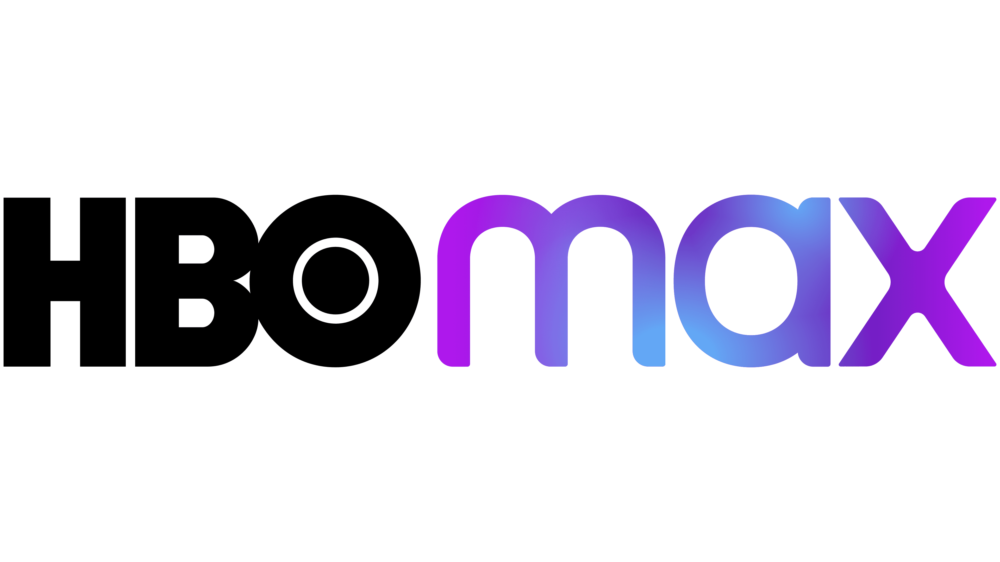
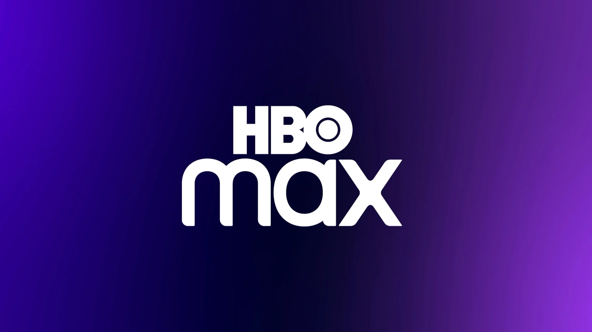

STREAMING
Apps para assistir seus Filmes e Séries
site 2


LINKS
Descrições
- Netflix
- HBOMAX
- Crunchyroll
- Prime Video
A Netflix é um serviço de streaming que oferece uma ampla variedade de séries, filmes e documentários premiados em milhares de aparelhos conectados à internet.
Você pode assistir a quantos filmes e séries quiser, quando e onde quiser – tudo por um preço mensal acessível. Aqui você sempre encontra novidades. A cada semana, adicionamos novas séries e filmes.
HBO Max é a nova plataforma de streaming que reúne todo o conteúdo da HBO, além de filmes campeões em bilheteria, séries incríveis para maratonar e Max Originals exclusivos.
HBO Max é um serviço de video sob demanda global operado pela empresa Warner Bros. Discovery, a proprietária da Warner Bros, um dos cinco maiores estúdios de cinema de Hollywood.
A Crunchyroll promove a arte e a cultura do anime para uma comunidade de fãs apaixonados no mundo todo.
Prime Video é um serviço online de streaming norte-americano de vídeo sob demanda por assinatura lançado em 2006, disponível em mais de 200 países, de propriedade e operado pela Amazon.com Inc. Este oferece programas de televisão e filmes para aluguel ou compra.
Fontes:
Dados tirados do Wikipédia
Direitos Autorais
© 2023 Meu site. Todos os direitos reservados.